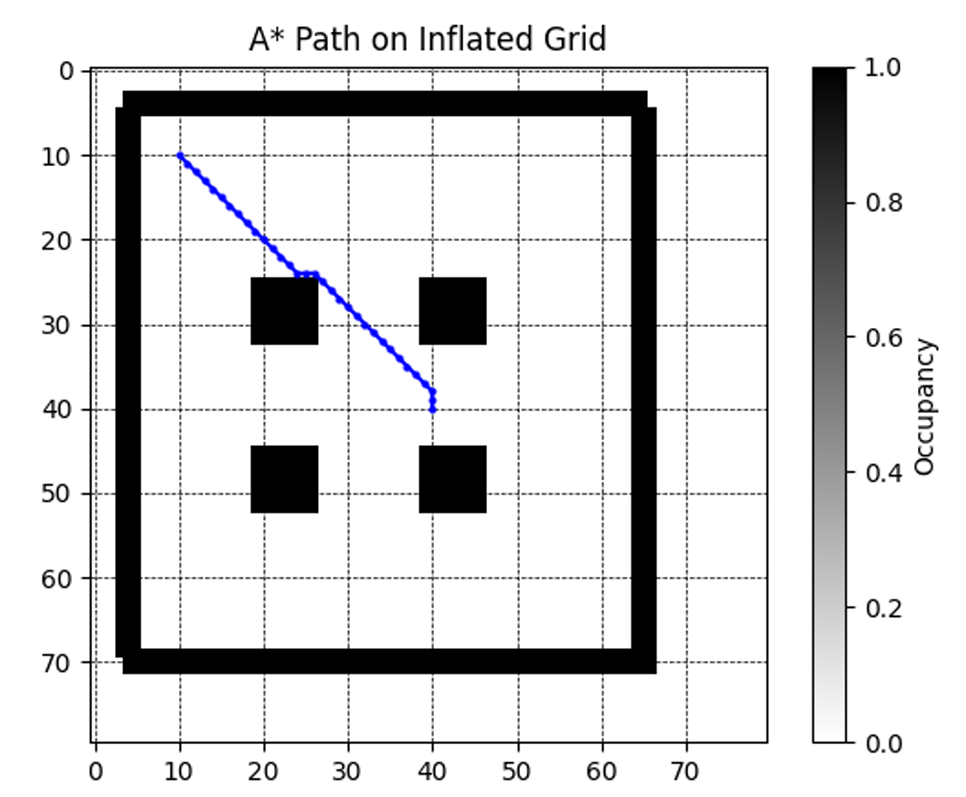
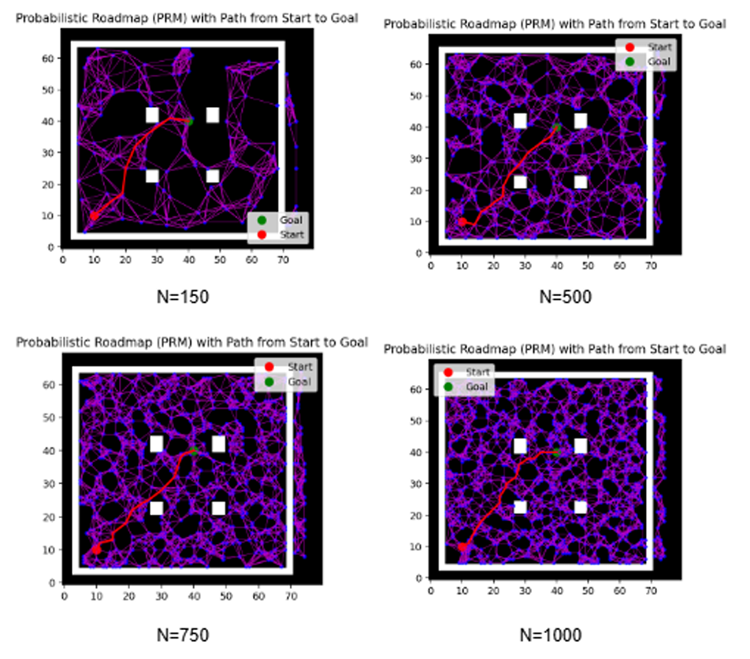
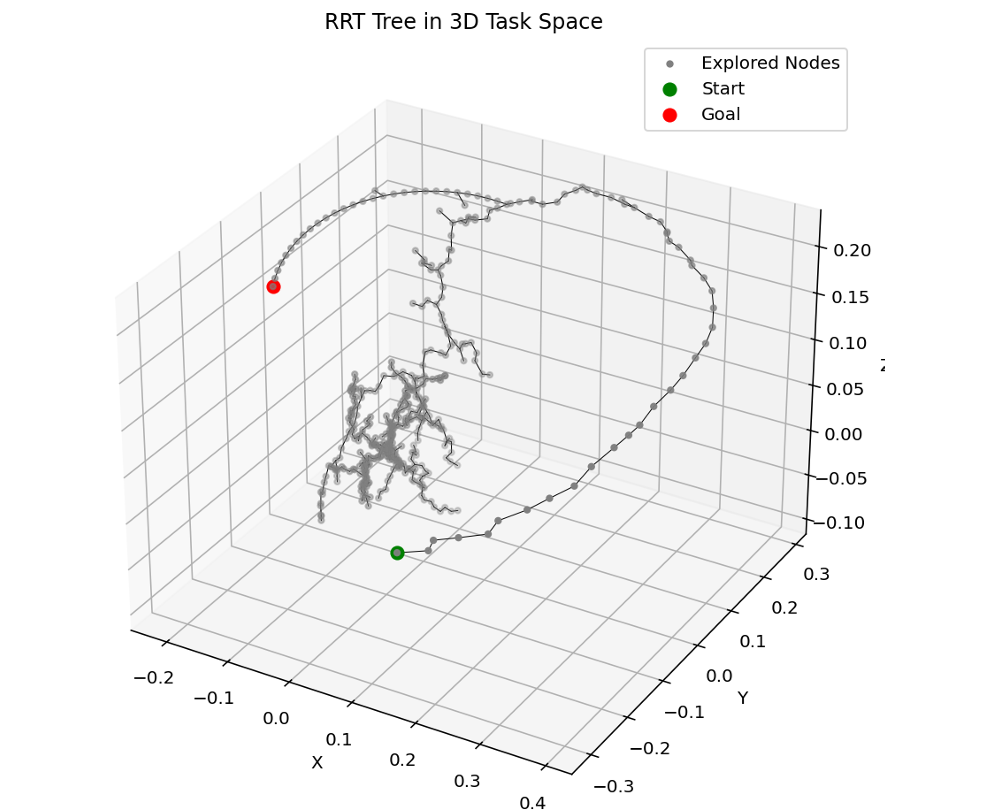
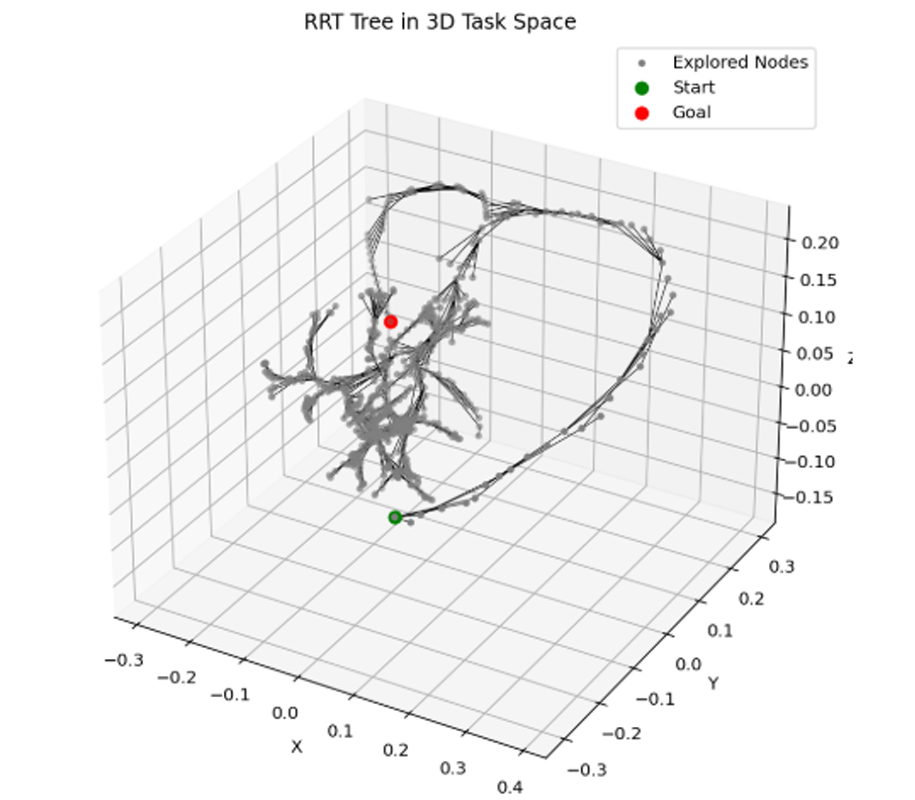
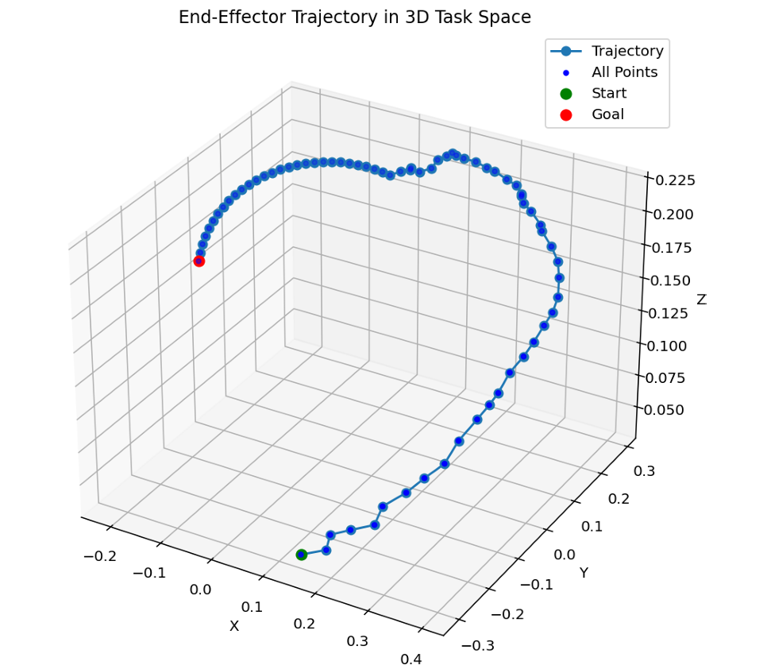
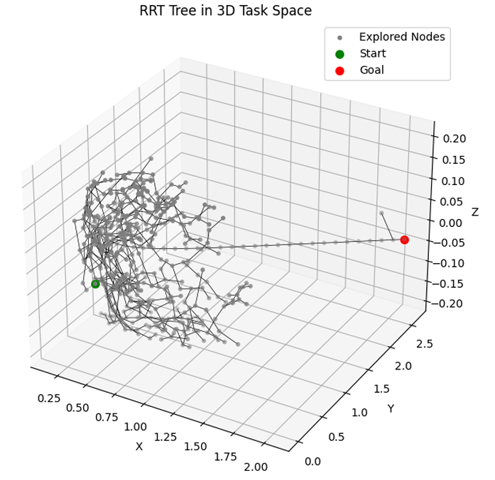
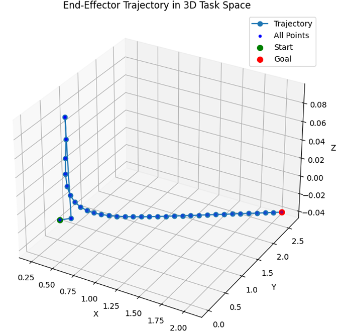
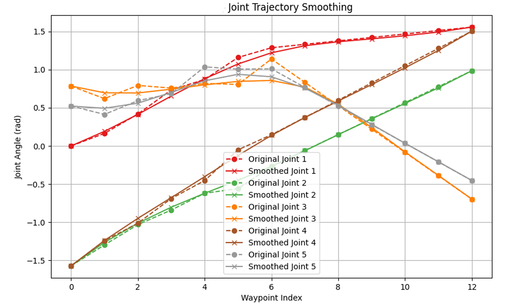
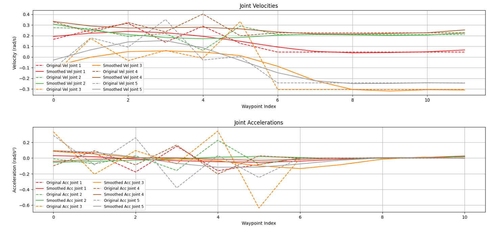

Implemented and benchmarked A*, PRM, RRT, and RRT* for a KUKA YouBot mobile manipulator (3-DOF base + 5-DOF arm), then designed a hybrid planning pipeline — A* for the base, RRT with a larger step size for the arm, followed by gradient-descent trajectory smoothing — achieving a 5x speedup in planning time with only a 2% increase in path length.
The KUKA YouBot combines an omnidirectional mobile base with a 5-DOF manipulator arm, giving an 8-DOF system overall. Motion planning was studied for both subsystems — separately and jointly — in a static, obstacle-cluttered CoppeliaSim environment, with the goal of identifying a planning strategy that's both computationally efficient and produces dynamically reasonable paths.
For base planning, the YouBot's roughly rectangular footprint (≈58 cm × 38 cm) was approximated as a circle of radius ≈35 cm for obstacle inflation in the occupancy grid, since most grid-based planners assume a circular robot footprint.
A* was run on the inflated occupancy grid using 8-connected node expansion (to reflect the YouBot's omnidirectional movement) with Euclidean distance as the heuristic — giving a deterministic, optimal path efficiently.
PRM was implemented as a sampling-based alternative: random collision-free configurations are sampled and connected into a roadmap, with Dijkstra's algorithm used to extract the shortest path once the roadmap is built. PRM was benchmarked across four sample sizes to study the resulting tradeoffs:
| Number of Nodes | Memory (kB) | Time (s) | Path Length (m) |
|---|---|---|---|
| 150 | 36.1 | 0.19 | 4.49 |
| 500 | 127.8 | 2.03 | 4.61 |
| 750 | 367.3 | 4.71 | 4.52 |
| 1000 | 395.8 | 8.15 | 4.58 |
PRM performance vs. number of sampled nodes
More samples improved roadmap connectivity but gave diminishing returns on path quality, while memory and computation time rose sharply. Critically, PRM's paths were consistently longer than A*'s optimal path regardless of sample count — so A* was selected for base planning, since the task was a discrete 2D navigation problem where A*'s determinism and speed clearly outperformed PRM's probabilistic approach.

A* path on the inflated occupancy grid

PRM roadmaps and paths across sample sizes
For the 5-DOF arm, RRT was implemented with tunable step size and goal bias, using CoppeliaSim's built-in collision detection (including self-collision) to validate every edge before it's added to the tree. Step size and goal bias were swept to characterise their effect on planning performance:
| Step Size (rad) | Iterations | Goal Bias | Time (s) | Memory (kB) | Path Length (m) |
|---|---|---|---|---|---|
| 1.0 | 40 | 1/20 | 44.7 | 3335 | 1.40 |
| 1.0 | 30 | 1/15 | 30.5 | 3172 | 1.43 |
| 1.0 | 20 | 1/10 | 20.0 | 2987 | 1.60 |
| 0.1 | 700 | 1/20 | 562.3 | 12448 | 1.50 |
| 0.1 | 530 | 1/15 | 441.5 | 10191 | 1.50 |
| 0.1 | 340 | 1/10 | 269.8 | 7444 | 1.57 |
RRT performance across step size and goal bias configurations
A larger step size (1 rad) drastically reduced both computation time and memory at the cost of slightly jerkier paths, while a finer step size (0.1 rad) gave smoother, more granular paths at a steep computational premium — over 10x the planning time for comparable path lengths.
RRT* was then evaluated head-to-head against RRT under matched parameters (step size 0.1 rad, goal bias 1/20, rewiring radius 0.5) to test whether its rewiring mechanism would justify its added cost:
| Algorithm | Avg. Path Length (m) | Avg. Time (s) | Avg. Memory (kB) |
|---|---|---|---|
| RRT | 1.497 | 562.3 | 12448.0 |
| RRT* | 1.440 | 1236.9 | 12038.2 |
RRT vs. RRT* under matched parameters
RRT* achieved only a modest 3.8% path-length improvement (1.440 m vs 1.497 m) while taking more than 2x longer to compute (1237 s vs 562 s) — a tradeoff that didn't hold up for time-constrained planning, so RRT was preferred for arm planning despite RRT*'s theoretical optimality guarantees.

RRT exploration tree, 3D task space

RRT* tree, refined by rewiring

End-effector trajectory of the final RRT path
Planning was also extended to the full 8-DOF configuration space (base x, y, θ plus 5 arm joint angles) using RRT directly in the combined space, simultaneously sampling base and arm configurations and checking each for collisions. While this in principle allows globally optimal coordinated motion, it proved highly computationally intensive, and revealed a more fundamental problem:
This pushed the project's focus back toward separate base/arm planning, prioritising dynamic feasibility over the theoretical global optimality of joint-space planning.

Combined (8-DOF) RRT exploration tree

Combined system end-effector trajectory
To make RRT's relatively jerky raw paths deployable on real hardware, a gradient-descent smoothing stage was applied post-planning. The optimisation minimises a composite cost combining a smoothness term (weighted joint velocity, acceleration, and jerk) and a joint limit penalty (keeping the trajectory near the center of each joint's range), with the start and goal configurations held fixed throughout.

Joint angle trajectories, before vs. after smoothing

Joint velocities and accelerations, before vs. after
Smoothing produced visibly more gradual, continuous joint angle profiles and substantially reduced peak joint velocities and accelerations — directly reducing mechanical stress and improving the likelihood of safe execution on physical hardware.
Combining the lessons from every prior experiment, the final pipeline uses A* for the base, RRT with a larger step size for the arm (trading raw path smoothness for speed), and a final trajectory smoothing stage to recover that lost smoothness without paying RRT's fine-step-size computational cost:
| Metric | Separate Planning | Final Hybrid Algorithm |
|---|---|---|
| RRT Step Size (rad) | 0.1 | 0.5 |
| Trajectory Smoothing | No | Yes |
| Planning Time (s) | 441 | 80 |
| Memory Usage (kB) | 10191 | 3992 |
| Path Length (m) | 1.498 | 1.532 |
Separate (unsmoothed, fine step) planning vs. the final hybrid pipeline
The hybrid pipeline cut planning time from 441 s to 80 s — a 5.5x speedup — and reduced memory usage by over 60%, at the cost of only a 2.3% increase in path length. This is the central practical result of the project: a large step size plus post-hoc smoothing recovers nearly all the benefit of a fine-step-size search at a fraction of the computational cost.
Final hybrid algorithm running end-to-end in CoppeliaSim: